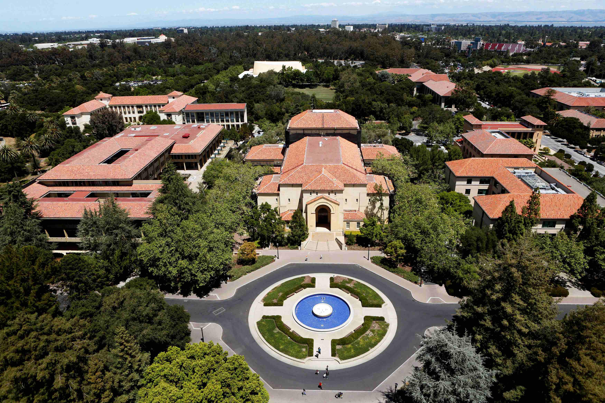

-

-

-
-

Official Website | Login | Register | Forgot Password
Leland Stanford Junior University (Stanford University or Stanford) is a private research university in Stanford, California. Stanford is known for its academic strength, wealth, proximity to Silicon Valley, and ranking as one of the world's top universities.
The university was founded in 1885 by Leland and Jane Stanford in memory of their only child, Leland Stanford Jr., who had died of typhoid fever at age 15 the previous year. Stanford was a U.S. Senator and former Governor of California who made his fortune as a railroad tycoon. The school admitted its first students on October 1, 1891, as a coeducational and non-denominational institution.